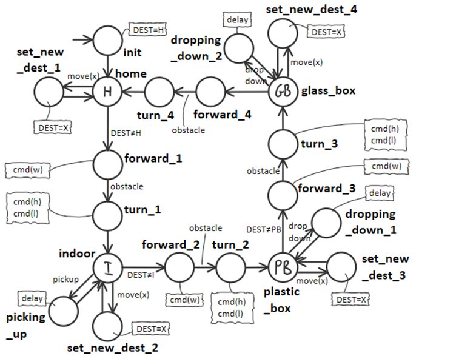
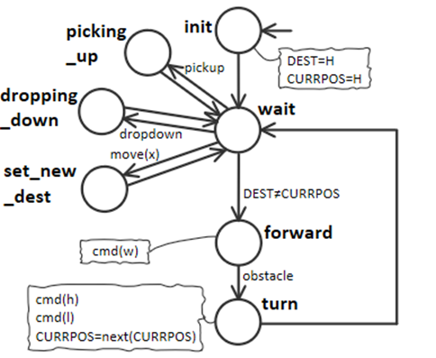
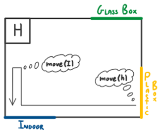
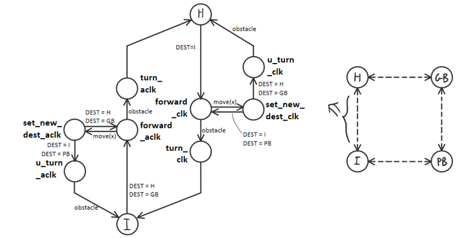
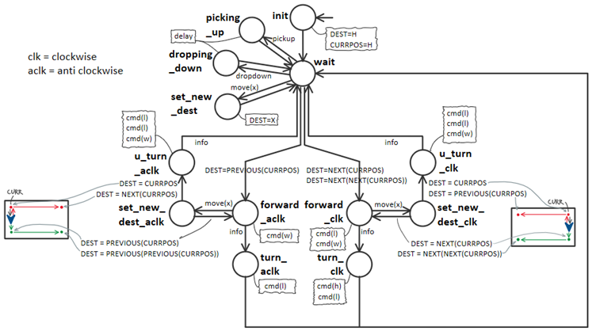

Uso di un sistema di coordinate o boundary walker che raggiunge gli angoli rilevando il contatto con i muri?
La particolare collocazione delle zone INDOOR, PLASTICBOX, GLASSBOX, HOME e la presenza di un sonar o sensore di impatto sul robot rendono attuabile una
soluzione che non richiede l'utilizzo di coordinate:
il robot può infatti muoversi all'interno della Service area lungo le pareti, orientandosi semplicemente rilevando le collisioni con le pareti.
In questa sezione analizziamo i punti a favore dell'utilizzo di un sistema a coordinate e uno senza coordinate:
I vantaggi nell'utilizzo di un sistema a coordinate:
I vantaggi nell'utilizzo di un sistema senza coordinate:
Per arrivare ad una decisione in merito ad una decisione così importante per la realizzazione del Mover, sono state state analizzate 3 diverse opzioni, che vengono qui descritte:
La prima soluzione è anche quella più semplice da comprendere: la strategia sarebbe infatti quella di attivare la giusta macchia a stati, che si occuperà di muovere il robot da una predeterminata posizione X ad una predeterminata posizione Y.
Pro e Contro:
Utilizziamo una macchina a stati in grado di raggiungere la destinazione facendo fare al robot sempre un giro in senso antiorario.
Se viene cambiata la destinazione mentre il robot è in movimento, esso non cambia direzione, perchè comunque per raggiugere ogni altro sito procede in senso antiorario, e quindi
il prossimo sito che deve essere raggiunto non cambia.
L'idea è quella di prevedere 4 macrostati, nei quali di volta in volta si decide se il prossimo sito deve essere raggiunto o meno: in pratica si raggiuge il prossimo sito solo se
la destinazione non è ancora stata raggiunta. I siti possono essere visti come delle specie di "macrostati" della FSM che implementa il mover.
Pro e Contro:
A livello concettuale la macchina a stati che deve essere implementata all'interno di mover sarebbe la seguente:
È anche possibile implementare lo stesso comportamento mantenendo la posizione corrente all'interno di una variabile (così come per la variabile contenente la posizione di destinazione). In tal caso la macchina verrebbe semplificata parecchio:
Si tratta di un'estensione dell'opzione 1: il robot è in grado di raggiungere la prossiama destinazione procedendo sia in senso orario che in senso antiorario (sulla base di quello che in quel momento risulta più conveniente). Inoltre il robot può cambiare rotta anche mentre si sta muovendo in avanti.
Pro e Contro:
La macchina a stati che deve essere implementata all'interno di Transport trolley si complica, perchè tra ogni "macro stato" e l'altro vi sono molti più stati:
Nell'immagine viene mostrato solo il ramo da HOME a INDOOR e viceversa. Prendiamo il caso in cui si voglia andare da INDOOR a HOME. Per ipotesi il robot, una volta raggiunto un macro stato, si trova sempre orientato verso il prossimo sito in senso antiorario. Siccome conviene in questo caso procedere in senso orario,giriamo il robot verso sinistra per puntarlo verso verso HOME, poi lo facciamo andare avanti (stato forward_clk). Se non arrivano altre destinazioni e rileviamo il contatto con la parete, vuol dire che siamo arrivati in HOME: dobbiamo ora girarci verso INDOOR per poter reagire correttamente alle le prossime richieste. Se invece, mentre si procede da INDOOR a HOME arriva una destinazione per la quale conviene tornare indietro (INDOOR o PLASTICBOX), allora si fa una sorta di inversione ad U (stato u_turn_clk) per tornare al macrostato in cui si era prima.
E' pur sempre possibile una implementazione più sintetica e compatta se manteniamo la posizione corrente in una variabile:
Anche in questo caso verifichiamo se, mentre si sta procedendo, arriva una nuova destinazione. Se non arriva si procede fino al raggiungimento del sito. Se invece arriva e risulta più conveniente cambiare direzione, si fa una inversione ad U e si torna allo stesso sito dal qaule si è partiti.
Il modulo, data la posizione corrente e l'orientamento del robot, fa un certo numero di step e di turn per raggiungere le coordinate di destinazione.
Pro e Contro:
Nell'esempio mostrato bisogna
Scegliamo la prima soluzione perché è la più semplice e quindi economica, fermo restando che a partire da questa è possibile estenderla per ottenere la seconda versione.
Inoltre se un giorno nuovi requisiti dovessero imporre l'utilizzo di un sistema di coordinate, verrebbe modificato soltanto il componente "transporttrolley".